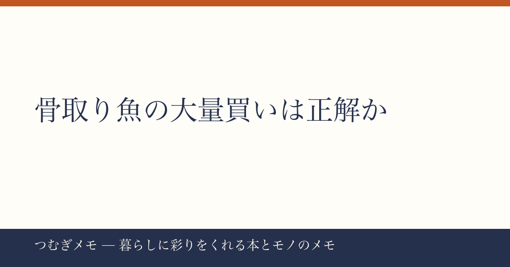

こんにちは、つむぎです。今週の楽天ランキングを見ていたら、ある「塊」に気づいてしまいました。
この記事でわかること: 楽天総合上位を席巻した「骨取り魚の冷凍ストック」が、なぜ今の暮らしにこれほどフィットするのか、買い方・使い方・続け方まで整理します。
今週の要点
- 骨取りさば・骨取り銀さけ合わせて5商品が楽天総合トップ10に同時ランクイン
- 最高レビュー数は36,926件・★4.78。"試した人の数"が品質保証になっている
- 「半額×大容量」の組み合わせが食費の固定費化を後押ししている
---
今週の楽天総合ランキングは、骨取り魚が異様な存在感を放っていた。
1位の無塩骨取りさば2kg（レビュー36,926件・★4.78）、4位の別ショップの骨なし鯖1kg（レビュー19,120件・★4.51）、そして7位・11位にノルウェー産骨取り銀さけ（レビュー4,015件・★4.79）と、数え方によっては骨取り魚だけで上位10枠のうち5枠近くが埋まっていた。
単品のセール祭りなら珍しくない。ただ今回は「さば」と「さけ」の2種が、無塩・有塩・1kg・2kgと選択肢を分散させながら同時ランクインしているのが面白い。これは一時的なブームではなく、複数の生活スタイルに骨取り冷凍魚が「定番食材」として定着しつつあることを示している。
レビュー36,000件超という数字を、ちょっと現実に引き寄せてみてほしい。これは「買って料理して食べて、また買った人」が積み上げた声だ。★4.78という評価は、極端な高評価レビューが多少あったとしても、不満が少数派であることを意味する。食品の冷凍品でここまで高評価が維持されるのは、品質のブレが少ないか、それとも「期待値の設計」が正確かのどちらかだ。
今日できること: まず1kgで試す。2kgは魅力的だが、初回は小さい単位で「自分の家族に合うか」を確かめる。半額タイミングを逃しても、次のセールは必ず来る。
---
骨取り魚がここまで広まった背景には、単純な「便利さ」以上の理由があると僕は思っている。
骨を取る作業は、実は料理の難所の中でも特殊な位置づけだ。包丁の技術とは別の「感覚的な注意力」が必要で、子どもや高齢の家族がいる食卓ではその一手間が心理的なブロックになる。週に3日魚を食べたいと思っていても、骨の処理が面倒で月2回になってしまう──そういう体験をしている人は多い。
骨取り加工済みの冷凍魚はそのブロックを物理的に取り除く。凍ったままフライパンに乗せれば15分で食卓に出せる。タンパク質と脂質のバランスが良く、青魚はDHA・EPAを含むというのは多くの人が知っているが、「知っているのに食べられていない」状態から「週3回食べている」状態に変えてくれる実装力が、冷凍骨なし魚にはある。
ここ数年、食材の「加工度」に対する見方が変わりつつあるという調査結果も報じられている。かつては「ちゃんと下処理から自分でやるべき」という空気感があったが、今は「何を食べるか」より「継続できる仕組みを作れるか」を重視する人が増えた。骨取り冷凍魚のランキング席巻は、その価値観の変化そのものだと思う。
今日できること: 今週のストック食材を書き出して「骨を取る手間で諦めていた魚料理」があれば、それを骨取り冷凍魚で代替できないか検討してみる。献立の固定化は食費と精神的コストを同時に下げる。
---
2kgを買ったはいいが、冷凍庫の奥で眠らせてしまった──冷凍食材あるあるだ。今週ランクインしていた商品が「1kg・2kgから選べる」設計になっているのは、この失敗を知っているショップ側の配慮でもある。
僕が実際に意識しているのは「週の魚曜日を2日決める」こと。月曜と木曜など、完全に固定してしまうと献立を考えるエネルギーが不要になる。凍ったままグリルかフライパンに入れ、塩・レモン・ポン酢のどれかをかけるだけで十分においしい。薬味を変えるだけで飽きにくくなる。
また、今週ランクインしていたVTのシートマスク（レビュー8,658件・★4.69）や骨取り魚のように、「大容量×高レビュー×定期的に買い直す」商品をいくつか持つことで、日常の買い物の意思決定コストが劇的に下がる。「これとこれは決まり」という定番を5品持っているだけで、毎週の買い物が別物になる。
食材の定番化について体系的に考えたい人にはAmazonで『食費を下げながら栄養を上げる 最強の食事術』を見るのような書籍も参考になる。定番食材を軸にした献立設計の考え方は、暮らしを整えたい人にとって読んで損のない切り口だ。
今日できること: 冷凍庫の中身を確認して、使い切るスケジュールをスマホのカレンダーにひとつだけ登録する。「水曜に魚を出す」と入れるだけで消費率が変わる。
---
Q. 無塩と有塩、どちらを選ぶべきですか？
初回は無塩をすすめる。調味を後から自分で決められる自由度があり、味噌漬け・塩焼き・ムニエルなど用途が広がる。有塩は下味が固定されるため、シンプルに焼くだけで完成させたい人向き。家族に味の好みが分かれる場合は無塩の方が無難だ。
Q. 冷凍庫のスペースが心配です。2kgは実際どのくらいの体積ですか？
一般的な切り身換算で2kgはおよそ8〜10切程度。ジップロックLサイズ2〜3袋分のスペースと思っておくと目安になる。届いたら商品のパッケージのまま立てて収納するか、袋を薄くして横積みにすると省スペースになる。冷凍庫の整理が先決という人は1kgからのスタートで十分。
Q. 骨取り加工で栄養が落ちるということはありますか？
骨を物理的に取り除く加工なので、身の部分の栄養成分には基本的に影響しない。ただし、カルシウムは骨に多く含まれるため、骨ごと食べる丸干しや小魚と比べると差が出る。魚のDHAやEPAを目的に選ぶなら骨取り品で問題ない。カルシウム補給は別の食材で賄う設計にするとよい。
---
「骨取り冷凍魚が5商品同時ランクイン」という今週の動きは、一時的なセール効果だけでは説明がつかない。これは「魚を食べたいけれど手間で断念していた人たちの需要が、ついに一点突破した」という暮らしの変化だと僕は読んでいる。
食費を劇的に変えようとするより、定番食材を5つ決めて固定化する。その小さな仕組みが積み重なって「生活がちょっと豊かになった」という実感につながる。骨取り魚はそのひとつになり得る。
（なお、つむぎメモはAIとの協働で記事を制作・編集している実験的なメディアです。情報の精度には気をつけていますが、購入前は各商品ページの最新情報を必ずご確認ください。）
📚 目次へ